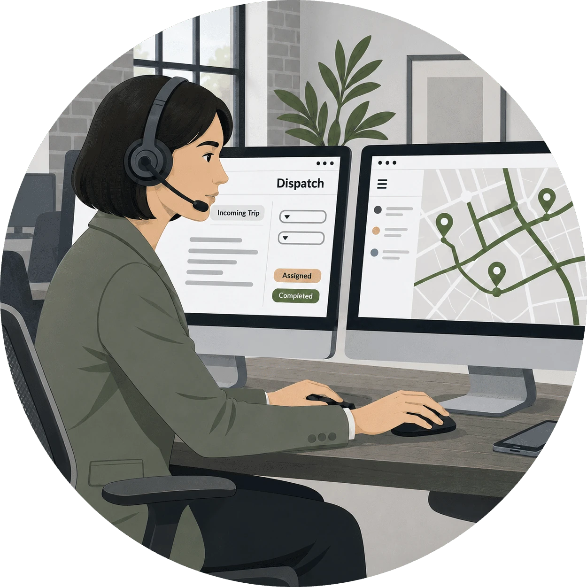
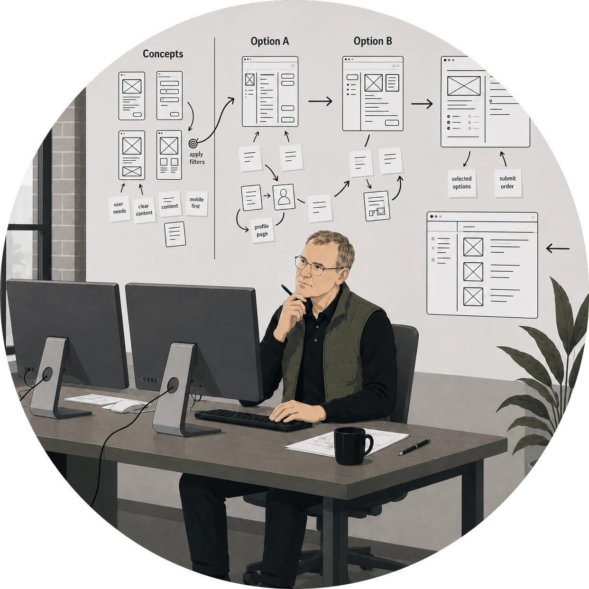
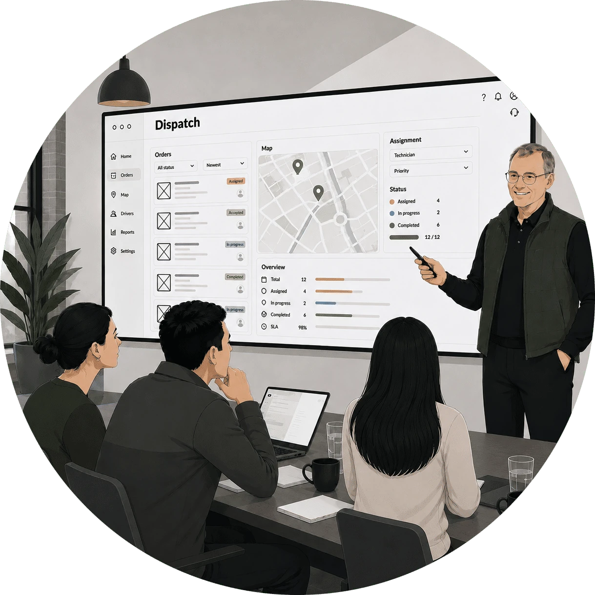
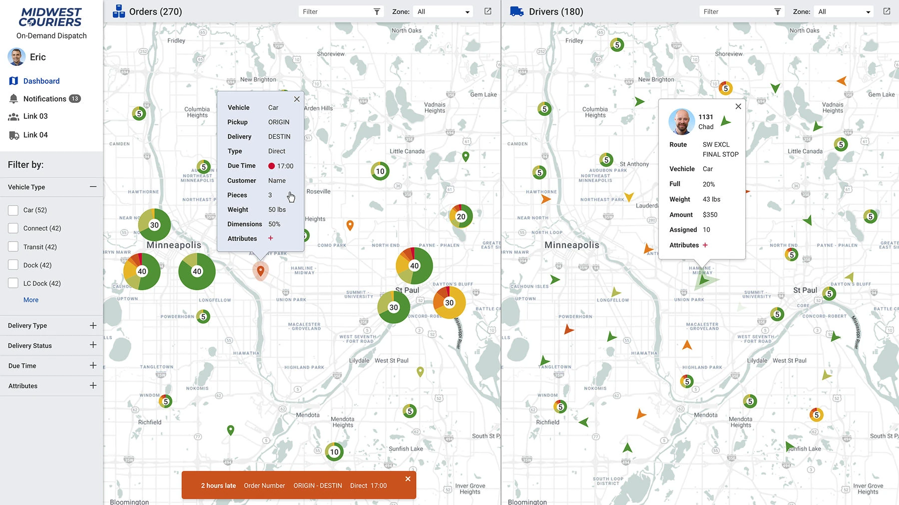
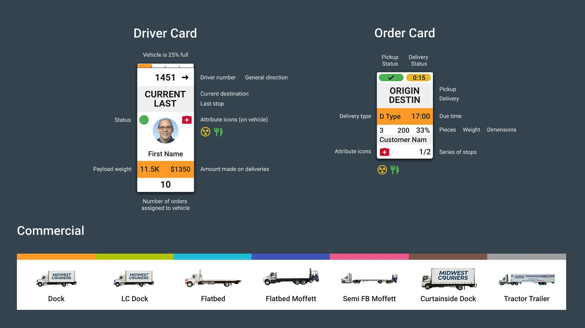
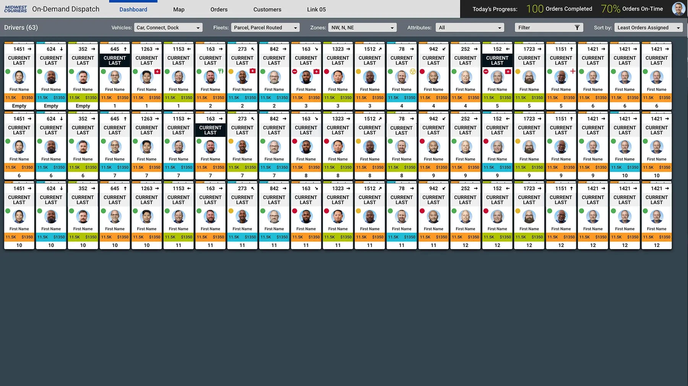
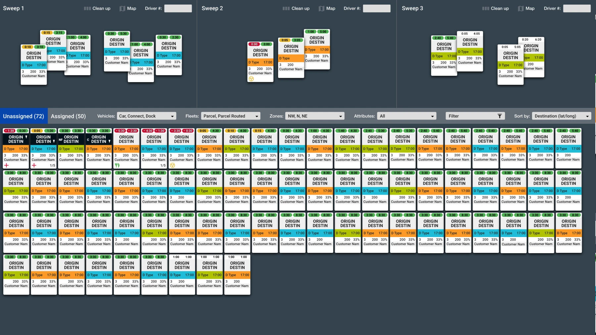
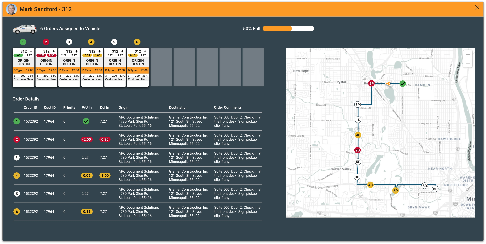

Giving dispatchers one real-time view of a 450+ truck fleet

Overview
The problem
Midwest Couriers operates a fleet of 450+ vehicles. Unlike long-haul trucking, each dispatcher manages 50 active drivers at once. The floor is high-intensity and team-based. Decisions happen by the second. With drivers making 10 to 20 stops a day, the volume of real-time judgment calls had outgrown their legacy tools, and dispatchers were absorbing the stress the system couldn’t.
The solution
I led the design of a collaborative “cockpit” interface built around how dispatchers actually work. They sit side-by-side at individual workstations, constantly coordinating with the colleague next to them. The system shows the whole fleet in real time, puts the things dispatchers do a hundred times a day within easy reach, and gives them the calm and precision same-day delivery demands.
My approach
Research-led product design for a real-time operations floor
I worked directly with the CEO, management team, and the dispatchers themselves. I wanted to learn the job before redesigning the tool.

Day in the life observations

Sketch multiple concepts

Test & refine with users
First instinct: a map-based view
My mind went straight to maps. I assumed I would do the job by visualizing geographic relationships. That is how I would have approached it. But once I sat with the dispatchers and watched them work, the assumption fell apart fast.
Map view integration

- Clustered pins show where the orders are piling up
- Color tells pickups apart from drop-offs at a glance
- Dispatchers can see how orders sit relative to each other
Pivoting to scannable cards
Dispatchers didn't need maps. They knew every location code by heart. What slowed them down wasn't geography. It was scanning through endless lists. They needed dense, scannable cards they could sort, stack, and process at the speed of their expertise.
Card detail view

- The driver card stacks live location, status, and how full the truck is
- The order card fits addresses and time windows into one tile you can read at a glance
- Small icons replace wordy labels, so more fits without getting harder to read
A cockpit for logistics
I designed a dual-monitor cockpit setup where every pixel earns its place. Dispatchers see the entire operation at a glance. No clicking through menus. No hunting for information.
Active drivers (left screen)

- A grid showing which drivers are out and what they’re doing right now
- Each card carries the driver’s ID, current load count, and earnings
- Filters to sort the fleet by vehicle type, zone, or anything else
Parcel dispatcher view
This is where orders get assigned and chaos becomes routes. The interface makes complex batching decisions feel simple. It matches the pace at which dispatchers already think.
Active orders (right screen)

- Dispatchers group orders into "sweeps" to build a route before assigning it
- The lower panel holds every unassigned order, with filters
- Orders drag straight from the queue into a sweep
Driver detail modal
When something goes wrong, dispatchers need details fast. A focused modal surfaces full driver context. It does this without pulling them away from the main dashboard.
Driver profile view

- The overlay shows how full the truck is and what’s already assigned
- A detailed list of every order, with its priority and time window
- A map plots the whole route in order
The impact
A dense screen isn’t a problem when it’s organized well. The dispatch floor stopped feeling chaotic and started feeling rhythmic, and the dispatchers who run it gained the confidence to handle peak load without burning out.